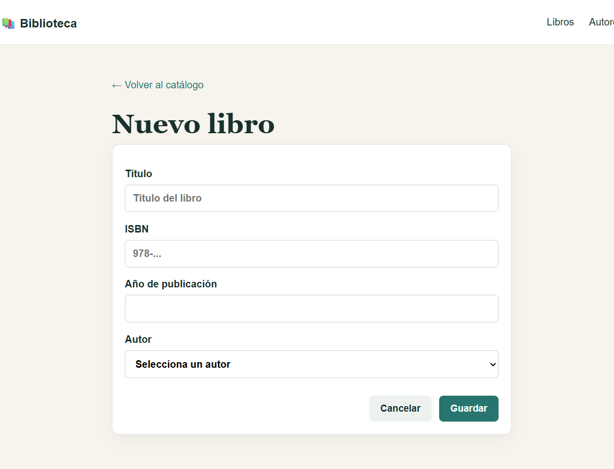
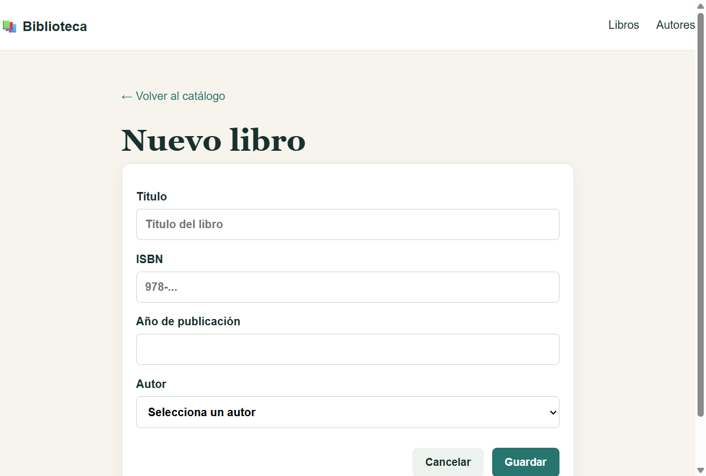

Aplicación web para gestionar el catálogo de una biblioteca. Permite crear, consultar, editar y borrar autores y libros. Cada libro pertenece a un autor y un autor puede tener varios libros. La interfaz incluye validación de campos y una vista de error global.
Java 17, Maven, Spring Boot 3.3.5, Spring MVC, Thymeleaf, Hibernate ORM mediante Spring Data JPA, H2 y JUnit/MockMvc.
La capa Controller expone las rutas HTTP y enlaza formularios. La capa Service centraliza las operaciones de negocio. La capa Repository usa interfaces JpaRepository, que proporcionan el CRUD completo. Las entidades están anotadas con @Entity, @Id, @OneToMany y @ManyToOne.
schema.sql crea las tablas y la clave foránea con borrado en cascada. data.sql inserta tres autores y tres libros de ejemplo. La base H2 es en memoria para que la corrección sea reproducible.
La clase BibliotecaApplicationTests ejecuta tres pruebas de integración: carga del contexto y datos relacionados, renderizado del listado de libros y apertura del formulario de alta de autores. Se ejecutan con mvn test.


mvn clean test package.java -jar target/biblioteca-spring-mvc.jar.http://localhost:8080. Para producción, sustituir la URL H2 por una base persistente y configurar credenciales mediante variables de entorno.El repositorio contiene commits separados para configuración Maven, persistencia, capa MVC, vistas y pruebas/documentación.